Inscribed & Circumscribed Figures — Practice Set
Bank code: GEO-INS · Section: Geometry · 30 questions — Easy 7 · Medium 15 · Hard 7 · Extreme 1
A square inscribed in a circle hands you the diagonal as the diameter; a circle inscribed in a square hands you the side as the diameter. Decide which one you have first.
Every question below is live in the question bank under the ID shown — the sheet and the portal are the same questions. Attempt a level with the clock running, then check Part C.
Part A — Questions
Quantitative Comparison — the four choices are always the same, so they are not reprinted: (A) Quantity A is greater · (B) Quantity B is greater · (C) The two quantities are equal · (D) The relationship cannot be determined from the information given
Level 1 · Easy — 7 questions · ~5 min
warm-up — these must be automatic
Q1 · GEO-INS-001 · MCQ · 40s
A circle is inscribed in a square with side length 10. What is the radius of the circle?
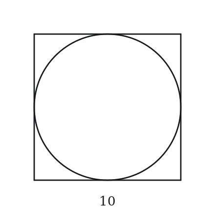
(A) 5
(B) 5√2
(C) 10
(D) 10√2
(E) 20
Q2 · GEO-INS-003 · MCQ · 45s
A square is inscribed in a circle of radius 5. What is the length of the diagonal of the square?
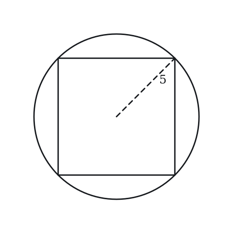
(A) 5
(B) 5√2
(C) 10
(D) 10√2
(E) 25
Q3 · GEO-INS-005 · MCQ · 35s
Triangle ABC is inscribed in a circle. AB is a diameter of the circle. What is the measure of angle ACB?
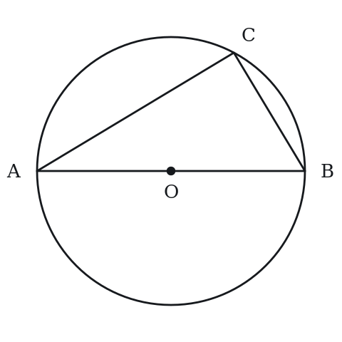
(A) 45°
(B) 60°
(C) 90°
(D) 120°
(E) 180°
Q4 · GEO-INS-007 · MCQ · 35s
A central angle of a circle measures 100°. What is the measure of an inscribed angle that intercepts the same arc?
(A) 25°
(B) 50°
(C) 100°
(D) 200°
(E) 400°
Q5 · GEO-INS-008 · QC · 50s
A circle of radius 4 is inscribed in a square.
Quantity A: Area of the square Quantity B: Area of the circle
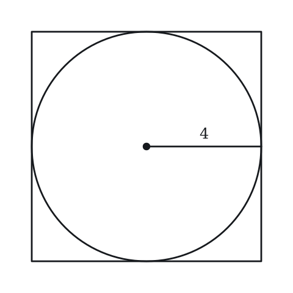
Q6 · GEO-INS-012 · Numeric Entry · 40s
An inscribed angle in a circle measures 35°. What is the degree measure of the central angle that subtends the same arc?
Numeric entry — write the number.
Q7 · GEO-INS-022 · MCQ · 60s
A regular hexagon is inscribed in a circle of radius 8. What is the side length of the hexagon?
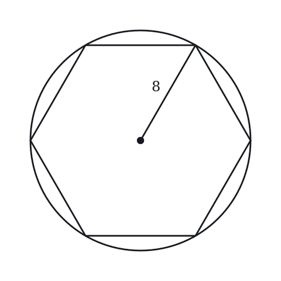
(A) 4
(B) 4√3
(C) 8
(D) 8√2
(E) 8√3
Level 2 · Medium — 15 questions · ~20 min
two or three steps, one planted trap each
Q8 · GEO-INS-015 · MCQ · 80s
A circle is inscribed in a triangle with sides 5, 12, and 13. What is the radius of the inscribed circle?
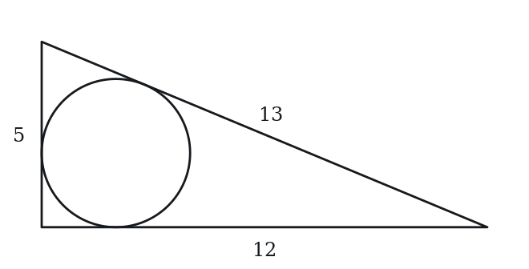
(A) 1
(B) 2
(C) 3
(D) 4
(E) 6
Q9 · GEO-INS-017 · MCQ · 65s
A circle is inscribed in a square with side length 10. What is the area of the region inside the square but outside the circle?

(A) 100 − 25π
(B) 100 − 10π
(C) 25π
(D) 100 − 5π
(E) 100
Q10 · GEO-INS-019 · Select all that apply · 80s
A triangle is inscribed in a circle such that one side of the triangle is a diameter of the circle. Which of the following must be true? Select all that apply.
(A) The triangle is a right triangle
(B) The triangle is isosceles
(C) The angle opposite the diameter is 90°
(D) The triangle is equilateral
(E) The two angles that are not opposite the diameter sum to 90°
Q11 · GEO-INS-020 · MCQ · 50s
Two angles inscribed in the same circle intercept the same arc. If one angle measures 35°, what does the other angle measure?
(A) 17.5°
(B) 35°
(C) 55°
(D) 70°
(E) 140°
Q12 · GEO-INS-021 · Numeric Entry · 85s
A circle is inscribed in a right triangle with legs 9 and 12. What is the radius of the inscribed circle?
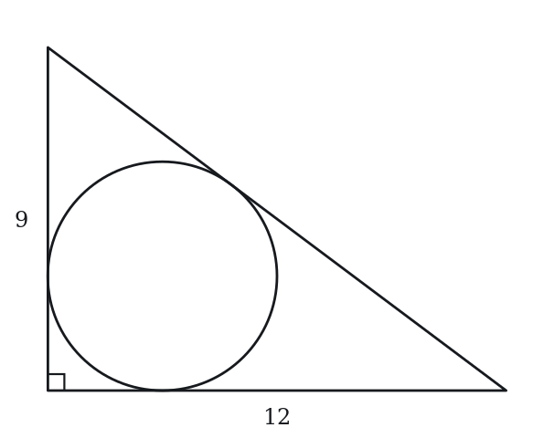
Numeric entry — write the number.
Q13 · GEO-INS-024 · MCQ · 70s
A rectangle with dimensions 6 × 8 is inscribed in a circle. What is the circumference of the circle?
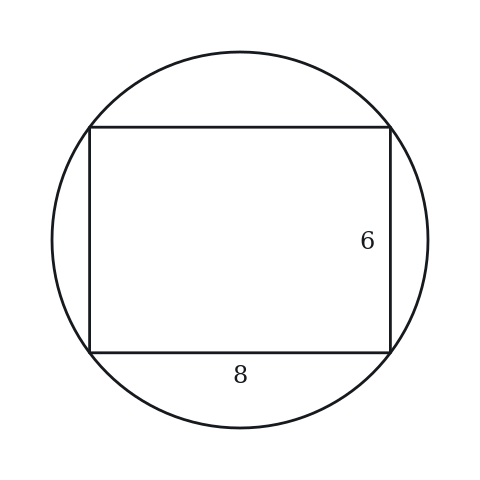
(A) 5π
(B) 10π
(C) 14π
(D) 20π
(E) 28π
Q14 · GEO-INS-025 · Select all that apply · 80s
A circle of radius r is inscribed in a square of side s. Which of the following relationships are true? Select all that apply.
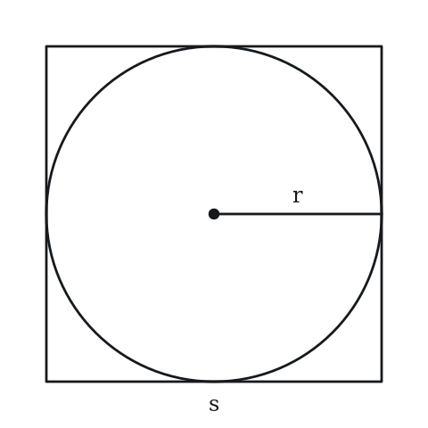
(A) s = 2r
(B) s = r√2
(C) The area of the region inside the square and outside the circle is (4 − π)r²
(D) Area of square = 4r²
(E) Perimeter of square = 8r
Q15 · GEO-INS-026 · Numeric Entry · 85s
A square is inscribed in a circle. The area of the circle is 50π. What is the area of the square?
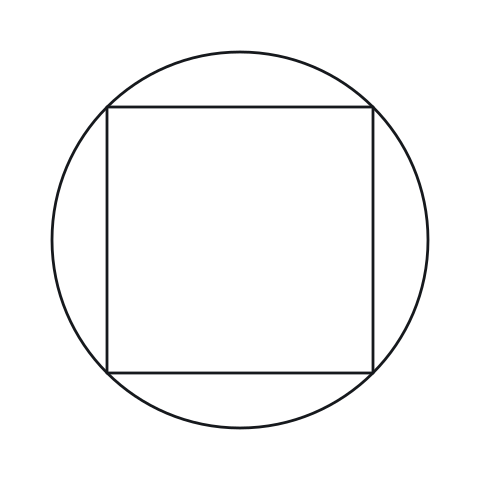
Numeric entry — write the number.
Q16 · GEO-INS-027 · QC · 90s
A circle is inscribed in a square of side 10. Another circle is circumscribed about the same square.
Quantity A: Area of the inscribed circle Quantity B: Area of the circumscribed circle divided by 2
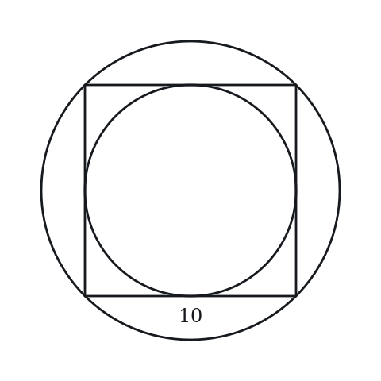
Q17 · GEO-INS-029 · MCQ · 80s
A circle with radius 3 is inscribed in an equilateral triangle. What is the side length of the triangle?
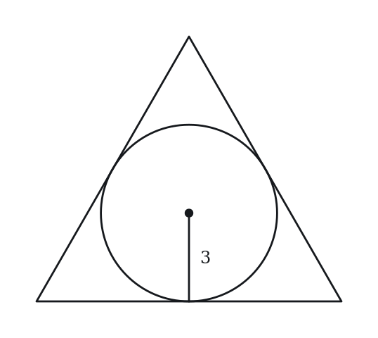
(A) 3
(B) 3√3
(C) 6
(D) 9
(E) 6√3
Q18 · GEO-INS-031 · Select all that apply · 85s
Points A, B, C, and D lie on a circle. AC is a diameter. Which of the following angles must equal 90°? Select all that apply.
(A) Angle ABC
(B) Angle ADC
(C) Angle BAC
(D) Angle ACD
(E) Angle BDC
Q19 · GEO-INS-036 · QC · 80s
Circle O has radius 6. Inscribed angle APB subtends arc AB (minor arc). The minor arc AB measures 160°.
Quantity A: Angle APB Quantity B: Angle between two radii OA and OB (reflex angle excluded)
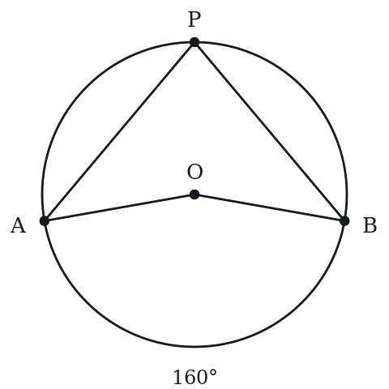
Q20 · GEO-INS-037 · MCQ · 105s
A square is inscribed in a circle, and another circle is inscribed in the square. If the outer circle has area 8π, what is the area of the inner circle?
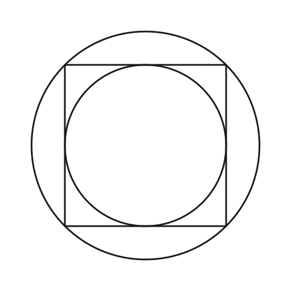
(A) π
(B) 2π
(C) 4π
(D) 4π√2
(E) 8π
Q21 · GEO-INS-043 · Numeric Entry · 100s
In circle O, arc ABC (the major arc from A to C passing through B) measures 260°. Inscribed angle ADC is formed by point D on the minor arc. What is the measure of angle ADC in degrees?
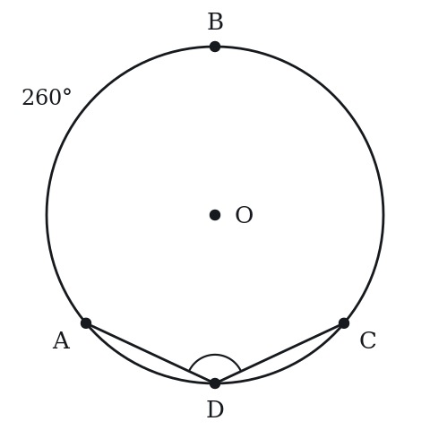
Numeric entry — write the number.
Q22 · SEC-CS-002 · MCQ · 85s
Quadrilateral WXYZ is inscribed in a circle. The measure of angle Y is 24 degrees less than three times the measure of angle W. What is the measure of angle W, in degrees?
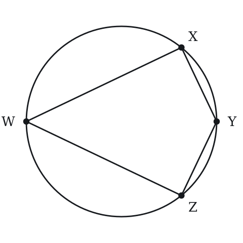
(A) 36
(B) 39
(C) 45
(D) 51
(E) 63
Level 3 · Hard — 7 questions · ~12 min
where 162+ is won or lost
Q23 · GEO-INS-034 · MCQ · 100s
A circle is inscribed in a right triangle. The two legs are 5 and 12. A second circle is circumscribed about the same triangle. What is the ratio of the area of the inscribed circle to the area of the circumscribed circle?
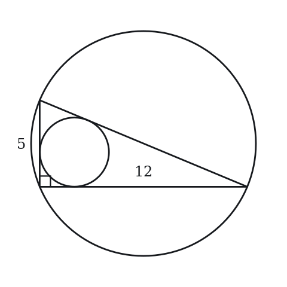
(A) 4/169
(B) 16/169
(C) 2/13
(D) 16π/169
(E) 4/13
Q24 · GEO-INS-035 · Numeric Entry · 100s
A rectangle with length 2w and width w is inscribed in a circle. The area of the circle is 20π. What is the area of the rectangle?
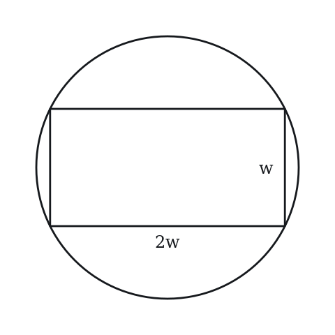
Numeric entry — write the number.
Q25 · GEO-INS-039 · Select all that apply · 105s
A rectangle is inscribed in a circle with radius 5. Which of the following could be the area of the rectangle?
Indicate all such areas.
(A) 12
(B) 48
(C) 50
(D) 60
(E) 78
Q26 · GEO-INS-041 · QC · 110s
A right triangle with legs a and b (a < b) is inscribed in a circle such that the hypotenuse is the diameter.
Quantity A: Radius of the circumscribed circle Quantity B: (a + b) / 2
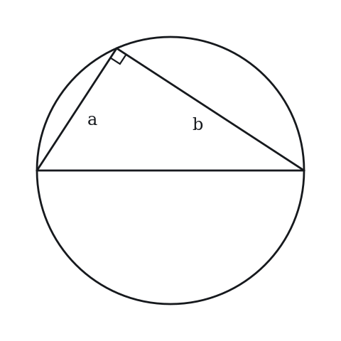
Q27 · GEO-INS-046 · MCQ · 105s
A circle is inscribed in a square, and a smaller square is inscribed in the circle. The area of the region that is inside the larger square but outside the smaller square is 50. What is the radius of the circle?
(A) 5sqrt(2)/2
(B) 5
(C) 5sqrt(2)
(D) 10
(E) 25
Q28 · GEO-INS-048 · QC · 95s
An equilateral triangle and a square are each inscribed in the same circle.
Quantity A: The length of a side of the triangle Quantity B: The length of a side of the square
Q29 · SEC-CS-028 · MCQ · 110s
Equilateral triangle PQR is inscribed in a circle whose area is 36*pi. What is the length of an altitude of triangle PQR?
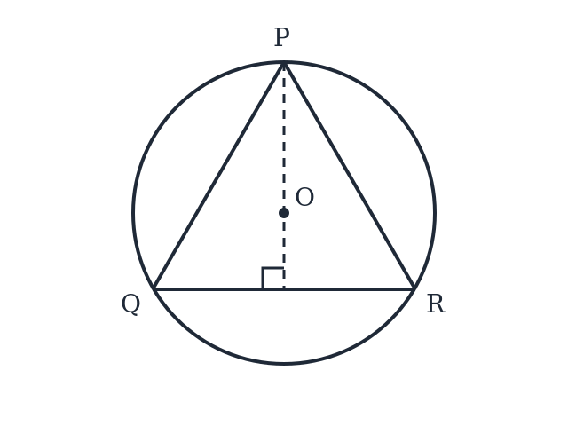
(A) 6
(B) 9
(C) 6sqrt(3)
(D) 12
(E)* 18
Level 4 · Extreme — 1 questions · ~2 min
the top of a real hard section — expect to need the insight, not the grind
Q30 · GEO-INS-KMF-001 · QC · 150s
Two line segments, each 10 units long, bisect each other.
Quantity A: the number of distinct circles that can be drawn through at least three of the four endpoints of the two segments Quantity B: 2
The rest of this sheet is part of Pro
All 30 questions, the answer key and full worked solutions with every trap named — plus 75 concept notes and 5,868 questions.